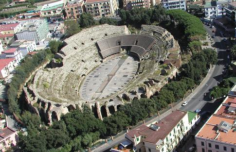
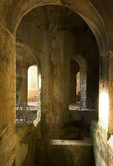
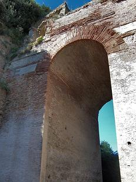

|
POZZUOLI

Pozzuoli fue fundada en el 529-28 a.e.c. por colonos de Samos, expulsados de Polícrates; fue llamada Dikaiarcheia (ciudad donde reina la justicia). Con la conquista de la Campania por Roma en el 338 a.e.c., cambió el nombre a Puteoli, por la abundancia de manantiales termales; se convirtió, en uno de los puertos más importantes del Mediterráneo. Durante la II Guerra Púnica, Fabio Massimo hizo fortificar y rodear con una muralla la ciudad, para impedir que Aníbal la tomara en el 215 a.e.c.. En el 202 a.e.c, Pozzuoli se convirtió en una de las colonias más importantes del litoral tirrénico meridional, por su posición protegida de los vientos, y por su fácil comunicación con Capua y Roma. Centro estratégico de las relaciones entre Roma y el Oriente, del siglo II a.e.c. al I, atravesó un periodo de extraordinario esplendor. Pozzuoli poseía numerosas industrias del vidrio, de cerámica, exportaba azufre y alumbre y tenia minas de puzolana.
Anfiteatro Flavio Se empezó a construir en la segunda mitad del siglo I, en tiempos de Vespasiano. Es el tercer anfiteatro italiano, tras el Coliseo y el de Santa Maria Capua Vetere. Estaba cubierto por materiales de la erupción de la Solfatara, las excavaciones comenzaron en 1839 y terminaron, tras varias interrupciones en 1947. La arena mide 75 x 42 m. Los subterráneos y los corredores están muy bien conservados.
Templo Apolo Está situado en la parte oriental del Lago Averno, en realidad era un ninfeo.
Termas de Carminiello ai Mannesi Las termas fueron encontradas por casualidad en 1943, después de los bombardeos. Antiguas termas privadas que tras el terremoto del 62 y la erupción del 79 se convirtieron en unas termas públicas.

Duomo Erigido sobre el templo levantado en honor de Augusto, fue completamente rehecho en 1643 por iniciativa del obispo Martino de León y Cardenas. El incendio del 14 de mayo de 1964 destruyó parte del edificio y descubrió la estructura del templo romano.
Templo de Serapis
Arco Felice

Excavaciones de Cuma Cruzamos el monumental Arco Felice de veinte metros de alto y seis de largo, abierto por los romanos en el monte Grillo en el siglo I, para facilitar el paso de la vía Domiziana que unía Pozzuoli a Roma. Pasado el arco continuamos hasta el cruce de Cumas, desde donde se llega a las excavaciones. Cuma, fundada en el siglo VIII a.e.c por colonos griegos procedentes de Eubea, es una de las colonias griegas más antiguas de Italia. Conquistada por los samnitas y después por los romanos, Cumas fue finalmente devastada por los sarracenos en el siglo X.
|